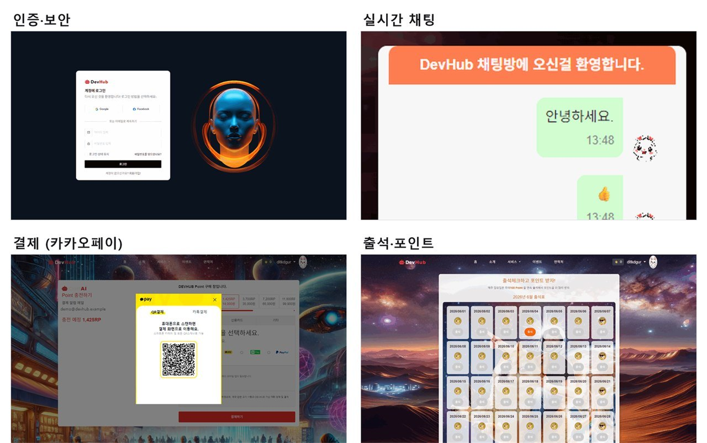
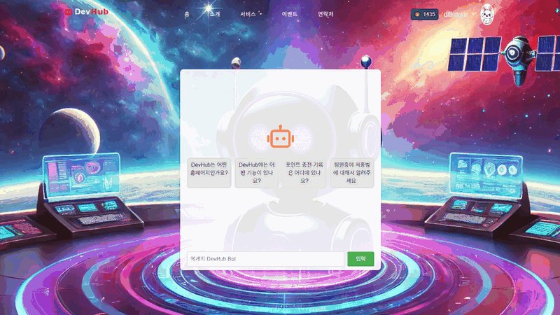
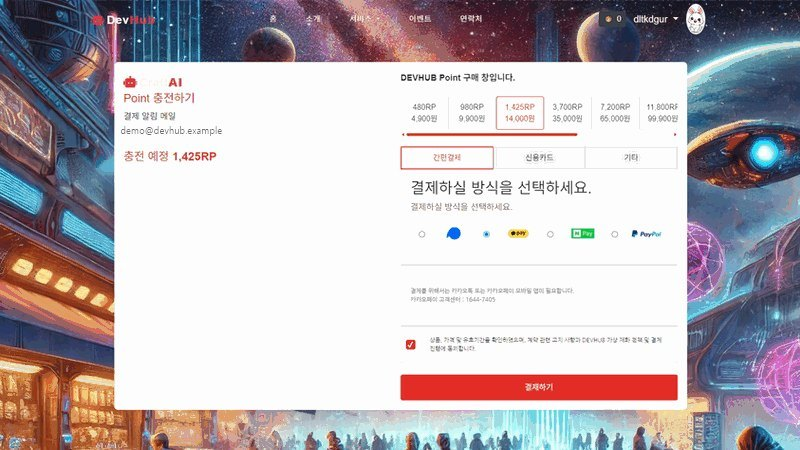

· 4인 팀 PM · 백엔드 · 인증과 보안
DevHub
개발자들이 UI와 코드를 공유하는 커뮤니티입니다. 프로젝트가 끝난 뒤 보안과 포인트 로직을 고치고 테스트를 붙였습니다.
- 기간
- 2024년 6월 – 7월, 한 달
- 형태
- 4인 팀의 PM입니다. ERD를 설계하고 인증과 보안, 카카오페이 결제창 연동, 실시간 채팅, 챗봇을 맡았습니다.
- 기술
- Java 21 · Spring Boot 3.3 · Spring Security 6 · JPA · Oracle · H2 · WebSocket(STOMP) · Thymeleaf
- 자료
- GitHub 저장소

개요
개발자 UI · 코드 공유 커뮤니티
DevHub는 게시판과 코드 스니펫, 팀 모집, 포인트 충전과 출석, 실시간 채팅, AI 챗봇이 있는 개발자 커뮤니티입니다. Spring Boot와 Thymeleaf로 서버에서 화면을 그립니다.
프로젝트가 끝난 뒤 코드를 다시 열었습니다. 꺼 두었던 Spring Security를 다시 켜고, 포인트 계산 버그를 고치고, 외부 키 없이도 앱이 뜨게 바꿨습니다. 지금은 Oracle 없이 명령 한 줄로 실행됩니다.
| 항목 | 값 | 설명 |
|---|---|---|
| ERD로 설계한 테이블 | 15개 | 테이블마다 JPA 엔티티가 하나씩 있습니다. |
| 끝난 뒤 붙인 테스트 | 17건 | 인증, 포인트, 출석, 검색 규칙을 확인합니다. |
누가 무엇을 맡았나
| 역할 | 맡은 일 |
|---|---|
| PM 저 | ERD 설계, 인증과 보안(Spring Security), 카카오페이 결제창 연동, 실시간 채팅(WebSocket), AI 챗봇(Dialogflow) |
| 팀원 | Bootstrap 템플릿 기반 페이지 구성, 이름 규칙, 랜딩 · 소개 · 문의 페이지 |
| 팀원 | UI 컴포넌트 공유 페이지(HTML/CSS 컴포넌트와 미리보기) |
| 팀원 | 게시판(목록 · 작성 · 상세 · 댓글), 팀 모집과 이력서 |
맡은 기능
팀 프로젝트에서 맡은 인증 · 결제창 · 실시간 채팅 · 챗봇


- 회원가입과 세션 로그인이메일 인증을 거치는 3단계 가입 화면부터 서버까지 만들었습니다. 없는 아이디와 틀린 비밀번호에는 같은 문구를 보여 줘, 계정이 있는지 드러나지 않게 했습니다.
- 실시간 채팅
/ws로 접속하고,/app/chat.sendMessage로 받은 메시지를/topic/public으로 뿌립니다. - 결제창 연동결제가 끝나면
/charge로 포인트를 적립하고, 구매 내역 저장과 안내 메일 발송까지 한 번에 처리합니다. - AI 챗봇사용자 메시지를 Dialogflow로 보내 의도를 분석하고 답하는 안내 챗봇입니다. 인증 키는 저장소에 올리지 않습니다.
끝난 뒤 다시 고친 것
꺼 두었던 Spring Security를 다시 켜고, 포인트와 기동 오류를 고쳤습니다
로그인은 세션에 아이디를 담는 커스텀 방식이라, Spring Security는 로그인한 사용자가 누구인지 몰랐습니다. 켜면 로그인한 사용자까지 막혀서 팀 프로젝트 때는 꺼 두었고, 그동안 프레임워크 수준의 인가는 없었습니다. 프로젝트가 끝난 뒤 요청마다 세션의 아이디를 SecurityContext에 올려 주는 필터를 넣고, 민감한 경로만 로그인을 요구하게 했습니다.
- SecuritySecurity를 켜면 모든 요청이 막혔습니다세션 로그인 정보를 요청마다 SecurityContext에 올려 주는
OncePerRequestFilter를 넣고, 회원 수정 · 글쓰기 · 결제 · 출석 같은 경로만authenticated()로 묶었습니다. 로그인하지 않았으면/login으로 보냅니다. - 포인트음수를 빼면 포인트가 오히려 늘었습니다잔액에서 차감액을 빼는 식에 음수가 들어가면 오히려 더해졌고, 잔액이 차감액 이상인지 보는 조건도 늘 통과했습니다. 0 이하 차감은 거부하고 잔액이 충분할 때만 빼도록 고쳤고, 트랜잭션은 서비스 계층에 두었습니다.
- 챗봇 키챗봇 키 파일이 없으면 앱이 뜨지 않았습니다키 파일은
.gitignore대상이라 새로 클론하면 없는데, 기동할 때 챗봇 클라이언트를 무조건 만들고 있었습니다. 키 파일이 있을 때만 빈을 만들고, 서비스는ObjectProvider.getIfAvailable()로 받아 키가 없으면 안내 문구를 돌려줍니다.
// SessionAuthenticationFilter · 요청마다 세션의 아이디를 인증 주체로
HttpSession session = request.getSession(false);
if (session != null
&& session.getAttribute("loginId") != null) {
var auth = new UsernamePasswordAuthenticationToken(
loginId, null, List.of(ROLE_USER));
SecurityContextHolder.getContext()
.setAuthentication(auth);
}
chain.doFilter(request, response);
// OrderService.deductPoints · 0 이하 차감 거부
if (MPoint <= 0) return 0;
if (currentPoints >= MPoint) { ... }줄인 코드입니다. 전체는 저장소의 config/SessionAuthenticationFilter.java와 service/OrderService.java에 있습니다.
그 밖에 정리한 것5건 더 보기
- 키와 비밀번호를 설정에서 뺐습니다별도 설정 파일로 옮기고
.gitignore에 넣었습니다. - 업로드 경로를 바깥으로 뺐습니다방금 올린 프로필 사진이 바로 보이지 않던 문제였습니다. 저장과 제공 위치를 외부
uploads폴더로 맞추니 바로 뜨고, JAR로 묶어도 동작합니다. - 접속 위치 조회 토큰을 서버로 옮겼습니다조회 토큰이 브라우저에 보이지 않게 서버가 대신 조회하고, 기록하는 IP도 요청에서 직접 뽑습니다.
- 데모 데이터와 한 줄 실행H2 프로파일에서 회원 · 게시글 · 구매 · 출석 데모 데이터가 자동으로 들어가, 외부 키 없이 바로 둘러볼 수 있습니다.
- 테스트 17건과 빌드 CIGitHub Actions가 JDK 21에서 빌드와 테스트를 돌립니다.
구조
Security · 컨트롤러 · 서비스 · 리포지터리 계층 구조
트랜잭션 경계는 서비스에 두고, 챗봇 · 결제 · 위치 조회 같은 외부 API도 서비스에서 부릅니다. 채팅만 WebSocket(STOMP)으로 따로 들어옵니다. DB는 운영에서 Oracle, 데모에서 H2를 씁니다.

| 분류 | 기술 | 쓰임 |
|---|---|---|
| 언어 · 프레임워크 | Java 21 · Spring Boot 3.3 · Spring Security 6 | 인증과 인가 |
| 저장 | Spring Data JPA · Hibernate · Oracle · H2 | 운영은 Oracle, 데모는 H2 |
| 실시간 | WebSocket · STOMP · SockJS | 공개 채팅방 |
| 바깥 API | Dialogflow · iamport(카카오페이) · ipinfo · Spring Mail | 챗봇, 결제창, 접속 위치, 안내 메일 |
| 화면 | Thymeleaf · jQuery · Bootstrap · CodeMirror · Quill | 서버에서 그리는 화면, 코드 편집 |
| 빌드 · 테스트 | Gradle · JUnit 5 · Spring Boot Test · GitHub Actions | 테스트와 빌드 CI |
테스트로 묶은 규칙
인증 · 포인트 · 출석 · 검색 규칙을 테스트 17건으로 고정했습니다
| 무엇을 | 확인하는 규칙 | 건수 |
|---|---|---|
| 세션 로그인 | 비밀번호가 맞으면 세션과 접속 이력이 남고, 틀리면 세션을 만들지 않습니다. 없는 아이디도 같은 문구로 답합니다. | 3 |
| 포인트 차감 | 음수 차감은 거부하고, 잔액보다 큰 금액은 빼지 않으며, 잔액이 충분하면 그만큼만 뺍니다. | 3 |
| 출석 적립 | 같은 날 두 번 출석해도 한 번만 쌓이고, 적립 포인트(일요일 100, 평일 10)는 서버가 정합니다. | 2 |
| AI 챗봇 경로 | 인증 키가 없어도 500 대신 안내 문구를 돌려줍니다. | 1 |
| 앱 기동 | 외부 키 없이 애플리케이션 컨텍스트가 올라옵니다. | 1 |
| 게시판 검색 | 제목 · 작성자 검색은 맞는 글만, 없는 키워드는 빈 목록을 돌려줍니다. | 3 |
| 접속 IP 조회 | 토큰이 없으면 외부 조회 없이 IP만 남기는 등, 접속 이력에 남길 값을 정합니다. | 4 |